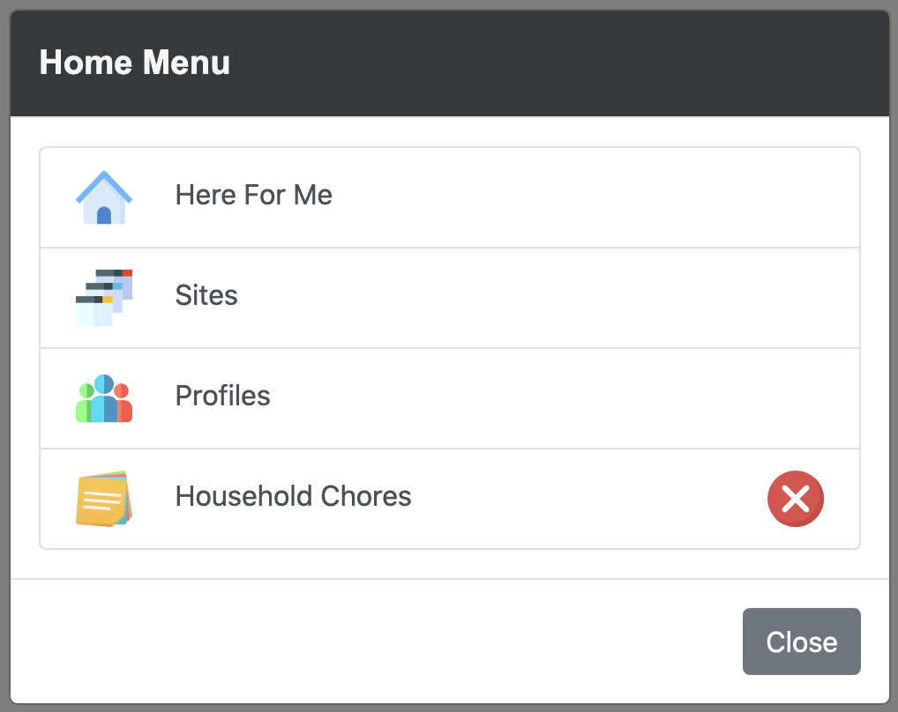

The here4.me user interface consists of four buttons located at the bottom of the screen. The controls are intentionally opaque to keep the user's focus on the desired content and not on the here4.me user interface.
The home button will take the user to the here4.me home view. This icon will change to the active site's icon when the user taps a site's icon in the Home view. If the user taps this icon twice, the home menu modal will pop up.
The home menu modal allows the user to switch between open sites and here4.me.
The post button will take the user to a view that can post data to a specific context. If the user is not in an active site, then a list of sites that allow user posts is displayed.
The QR code button will take the user to a view that can present a custom QR code for other users to scan or a QR code scanner. The contents of the custom QR code is entirely up to the content producer.
The Configuration button will take the user to a configuration view. If the user is not in an active site, then the here4.me configuration view is displayed.